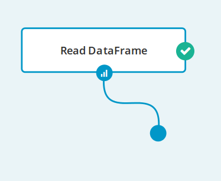

Getting Started
Table of Contents
Quick Introduction
Analytical Engine is a visual framework letting users create Apache Spark applications in a intuitive and interactive way. All while connected to any Spark Cluster (YARN, Mesos, Standalone) or to a bundled local Spark.
For a more detailed overview go to the Overview section.
Run Analytical Engine on Your Machine
Mac or Windows
Analytical Engine for Mac
and Windows
 is distributed in the form of a Vagrant image.
is distributed in the form of a Vagrant image.
- Install Vagrant (required). You can find the Vagrant installation guide at vagrantup.com.
- Download
Vagrantfilefrom the get Analytical Engine page. - Go to the catalog with
Vagrantfileand runvagrant upfrom the command line. - Go to http://localhost:33321 and start using Analytical Engine!
For more details and troubleshooting go to the Analytical Engine Standalone Deployment mode page.
Linux
Analytical Engine for Linux
 is distributed in the form of docker images.
is distributed in the form of docker images.
- Install Docker (required) and docker-compose (required). You can find the Docker installation guide at docs.docker.com/engine and the docker-compose installation guide at docs.docker.com/compose.
- Download
docker-compose.ymlfrom the get Analytical Engine page. - Go to the catalog with
docker-compose.ymlfile and rundocker-compose upfrom the command line. - Go to http://localhost:33321 and start using Analytical Engine!
For more details and troubleshooting go to Analytical Engine Deployment page.
Use Analytical Engine
In the following steps we will read some data. Then we will apply a simple transformation to the data.
Create New Workflow and Read Your Data
- Run Analytical Engine on your machine and go to http://localhost:33321.
- Create a new workflow using the New Workflow button. Workflow Editor will start.
-
Start editing by clicking from the top menu. It will start up an Apache Spark backend for your workflow session.
- Read some data into Analytical Engine:
- Drag and drop a
Nodefrom the toolbox on the left to the canvas, or just right-click on the canvas. - Select
Input/Output>Read DataFramefrom the operation selector. - Click on the created
Read Dataframe. You can set its parameters on the right-hand side panel. Select thetransactions.csvdata source.
- Drag and drop a
- Run the operation by clicking the button from the top menu.
- Click on the operation node to preview Dataframe.
Transform Your Data
In the next step you will apply a simple transformation to your data.
- Drag an edge from the output port of the
Read DataFrame. - Select
Filter Columnsoperation from the operation selector.

- Set
selected columnparameter ofFilter Columnsto some set of columns of your choice. - Run your workflow again and view the transformed Dataframe produced by
Filter Columns!
Congratulations! You have successfully created your first Analytical Engine workflow.
Learn More!
- Check out the basic examples or some of the more advanced use cases
- Check out a full operation list with a documentation.